High Avairability, Fault Tolerance, and Disaster Recovery
Amazon EC2 Auto Scaling
概要
- Auto Scaling グループのインスタンス数をスケーリングの設定に従ってスケールアウト。

-
構成要素
- Auto Scaling グループ
- 起動設定/起動テンプレート
- スケーリングポリシー
-
https://docs.aws.amazon.com/ja_jp/autoscaling/ec2/userguide/what-is-amazon-ec2-auto-scaling.html
- BB: https://d1.awsstatic.com/webinars/jp/pdf/services/20170315_AWS-BlackBelt-AutoScaling.pdf
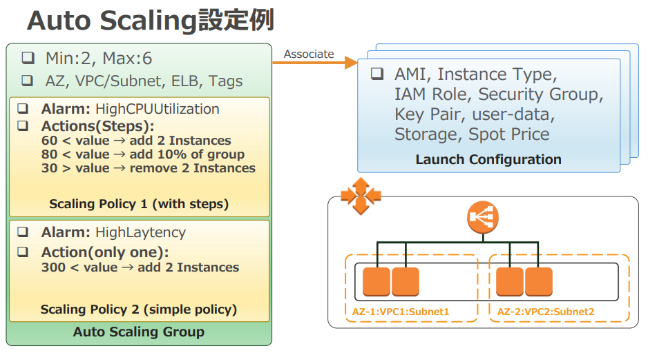
起動設定/起動テンプレート
起動設定 (Launch configuration)
-
Auto Scaling グループで起動するインスタンスを設定する。
- EC2 の起動設定と同じ: AMI ID、インスタンスタイプ、キーペア、SG、ボリューム、UserData によるスクリプト実行、タグなど
- サブネット(AZ) は Auto Scaling グループの設定が優先される。
-
https://docs.aws.amazon.com/ja_jp/autoscaling/ec2/userguide/LaunchConfiguration.html
起動テンプレート (Launch template)
- 既存テンプレートから継承して別バージョンのテンプレートが作れる。
- 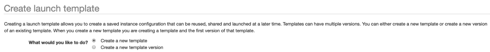
- スポットインスタンスを起動できる (スポットフリートを起動テンプレートから作成)
-
- オンデマンドとミックスで使える。
-
https://docs.aws.amazon.com/ja_jp/autoscaling/ec2/userguide/LaunchTemplates.html
Note:
- 変更するとバージョン番号がインクリメントする。
- 作成した起動設定・テンプレートは複数の Auto Scaling グループに使用できる。
- EC2 インスタンス指定で Auto Scaling グループを作成することもできる。その場合、起動設定が自動的に作成される。
Auto Scaling グループ
-
Auto Scaling グループ単位で設定
- グループサイズ: 最大容量、最小容量、希望容量/Max,Min,Desired
- 起動設定/テンプレート。サブネット (AZ)。
- スケーリングポリシー、終了 (Termination) ポリシー、ELB、ヘルスチェックタイプ。
-
ELB 統合
- Auto Scaling グループに ELB のターゲットグループを設定できる。
- Auto Scaling が ELB ターゲットグループに自動でインスタンスを追加・削除する。
- CLB の場合は直接 CLB を選んでアタッチ。
- https://docs.aws.amazon.com/ja_jp/autoscaling/ec2/userguide/attach-load-balancer-asg.html
-
マルチ AZ でインスタンス数が均等になるようにバランシングされる。
- スケールイン時もデフォルトの終了ポリシーは AZ 間でインスタンス数が均等になるよう終了インスタンスを選択する。
- 終了ポリシーはカスタマイズ可能。一番古いインスタンス、次に課金が発生するまでの期間が最も短いインスタンスなど。
-
リージョンをまたいで設定することはできない。
Ref. スケールアウト <-> スケールイン / スケールアップ <-> スケールダウン
https://www.idcf.jp/words/scale-in.html
スケーリングの実施
-
手動スケーリング (Manual Scaling)
- Auto Scaling グループの希望容量を手動でアドホックに変更する。
- バッチ処理などの実施時や動作が不安定なインスタンスを切り離すのに使用。
-
固定数インスタンスの維持
- 最小容量(希望容量)の維持
- 最小容量、最大容量、希望容量に同じ値を設定
Scheduled Action (予定されたアクション)
- グループサイズ (Max,Min,Desired) の変更をスケジュール
- スケールアウトが必要な状況が予測可能なスケジュールで発生する場合に使用。
- Cron, リピート, Once のスケジュール指定。
- 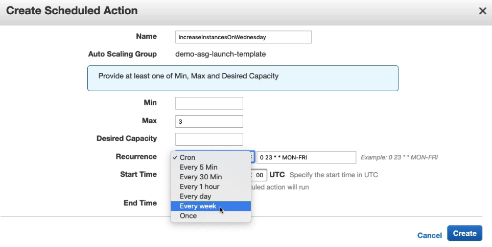
動的スケーリングポリシー
CloudWatch メトリクス/アラームに基づいてインスタンスを増減する動的スケーリング (Dynamic Scaling)
希望容量 (Desired capacity) が動的に変更されることでスケールアウト/インが発生する。
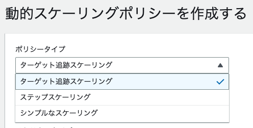
Target tracking scaling
- CloudWatch メトリクスのターゲット値を維持するようスケールアウト/インする。
- 例えば平均 CPU 使用率 50% を維持できるようにインスタンス数を増減。
-
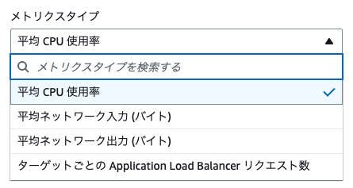
- スケールアウト用・スケールイン用の2つの CloudWatch アラームが自動的に作成される。
-
Warm up
- 指定された秒数の間は新しいインスタンスの値はメトリクスに反映されない。
- Cooldown より長くしてしまうとメトリクス反映前に再度スケーリングが発生してしまい問題になる。
-
Disable scale-in
- このポリシーによるインスタンスの削除 (スケールイン) を無効化。
Step scaling
- CloudWatch アラームにスケーリング調整値を設定してインスタンス数を増減する。
- 平均 CPU 使用率 50% 超過アラームと、80% 超過アラームそれぞれにインスタンス追加数を個別に設定できる。
- 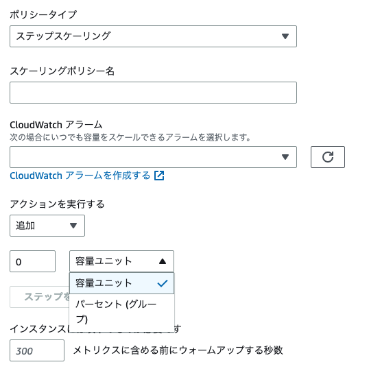
- アクション: 追加・削除
- 単位: インスタンス数、割合
Simple scaling
- Step scaling 以前からサポートされていたステップが1つしかない版。
- 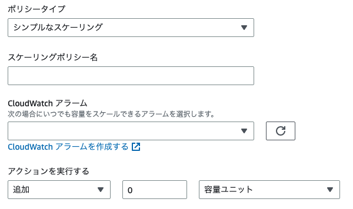
Predictive scaling
- AWS Auto Scaling による予測スケーリング。
スケールイン
- 作成したスケールアウトイベントについて、対応するスケールインイベントを作成することが重要。
- スケーリングポリシーで CloudWatch アラームを指定するか、スケジュールスケーリングを指定する。
- つまりメトリクス基準でスケールインするか、定期的にスケールインさせるか。
参照
- https://docs.aws.amazon.com/ja_jp/autoscaling/ec2/userguide/scaling_plan.html
- https://docs.aws.amazon.com/ja_jp/autoscaling/ec2/userguide/as-scale-based-on-demand.html
クールダウン (Cooldown) とウォームアップ (Warmup)
- スケールアウト時のインスタンスの起動処理中に連続してアラームが発生した場合にインスタンスを立ち上げすぎないようにする機能。
-
クールダウン (デフォルト300秒)
- スケーリング実施後にアラームが連続して発生しても次のスケーリングを実施しない期間。
- スケールアウト時は新たなインスタンスの起動タスクが実施されない。
- スケールイン時は新たなインスタンスの停止タスクが実施されない。
-
ウォームアップ
- 新たに起動したインスタンスがスケーリングポリシーに反映されるまでの秒数。
- インスタンス内の OS のブートアップやアプリケーションの起動時間を考慮。
- 台数追加がスケーリングされてもウォームアップ期間 (デフォルト300秒) 中のインスタンスを差し引いた台数しか追加しない。
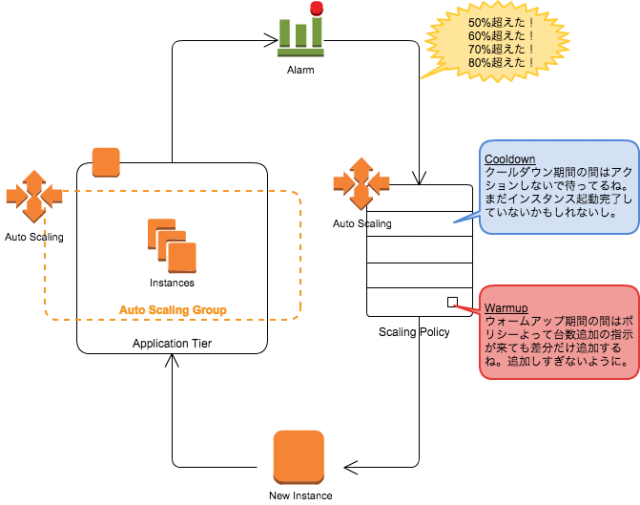
https://dev.classmethod.jp/cloud/auto-scaling-steps/
ヘルスチェック
-
Auto Healing
- 異常 (impared) 判定されたインスタンスを終了 (terminate) し新しいインスタンスを起動する。
-
EC2 のヘルスチェック (デフォルト)
- システムステータスチェック: EC2 のインフラ由来の問題の検出
- インスタンスステータスチェック: ARP によるヘルスチェック
- 1 分おきに実施される。
- https://docs.aws.amazon.com/ja_jp/AWSEC2/latest/UserGuide/monitoring-system-instance-status-check.html
-
ELB によるヘルスチェック (オブション)
- ELB のターゲットグループを Auto Scaling グループに設定した場合に選択できる。
- ELB のヘルスチェック (HTTP によるヘルスチェック) で判定して Auto Healing を実施。
-
カスタムヘルスチェック
- 独自のヘルスチェック機能から Unhealthy 状態を Auto Scaling に通知する。
-
https://docs.aws.amazon.com/ja_jp/autoscaling/ec2/userguide/healthcheck.html
終了ポリシー (Termination Policy)
デフォルト終了ポリシーの挙動:
- 最もインスタンスの多い AZ を選択
- Scale-in Protection がセットされていないインスタンスを選択
- 最も古い起動設定・テンプレートで起動されたものを選択
- 次の課金時間に最も近いものを選択。
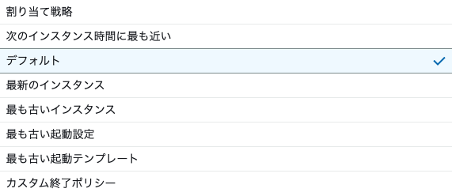
トラブルシューティング
Suspended Process オプション
- Auto Scaling グループで特定の処理を停止する。
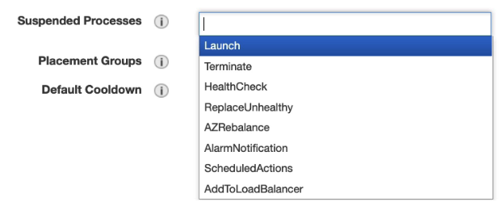
- AlarmNotification: CloudWatch alarm を受け取らなくなる。
Detach アクション
- インスタンスを Auto Scaling グループと ELB ターゲットグループからデタッチする。
- 代わりのインスタンスが起動される。
- インスタンスのフォレンジックなどの際に使う。
Set to Standby アクション
- インスタンスを ELB ターゲットグループからデタッチする。
- 他のインスタンスにトラフィックが振り分けられて負荷が上がる。
Set Scale In Protection
- スケールイン時に対象インスタンスが削除対象にならないようにする。
- バッチ処理中のインスタンスやマスターノードなどに動的に設定する。
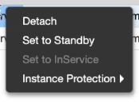
ライフサイクルフック
インスタンスの起動・終了にフック待機 (デフォルト1時間) を入れられる。
スクリプト実行
- 起動テンプレートの UserData のスクリプトが実行される
通知
- SNS, SQS
EventBridge/CloudWatch Events
- Auto Scaling の EC2 instance-launch Lifecycle Action/EC2 instance-terminate Lifecycle Action をイベントソースにできる
- Lambda などで処理を実施後 CompleteLifecycleAction API をコールする。
使用例:
-
EC2_INSTANCE_LAUNCHING (Pending: Wait → Proceed)
- アプリケーション初期化処理の待機や SSM RunCommand などを実施。
-
EC2_INSTANCE_TERMINATING (Terminating: Wait → Proceed)
- ログの待避やスナップショットなどを実施。
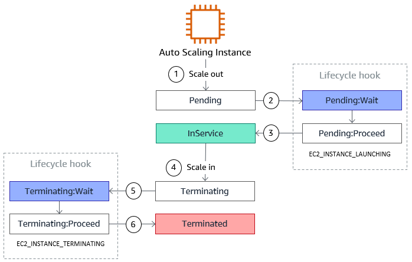
CompleteLifecycleAction の CLI 実行
aws autoscaling complete-lifecycle-action --lifecycle-action-result CONTINUE --lifecycle-hook-name LaunchHook --auto-scaling-group-name demo-asg-launch-template --instance-id i-XXXXXXXXXXXX --region eu-west-1 --profile aws-devops
# lifecycle token can also be used instead of --instance-id if Lambda is used for example
https://docs.aws.amazon.com/autoscaling/ec2/userguide/lifecycle-hooks.html
https://www.yamamanx.com/amazon-ec2-auto-scaling-lifecycle/
SQS キューサイズに応じてスケールアウト・インするユースケース
- SQS キューのサイズをカスタムメトリクスとして投入する
- カスタムメトリクスを追跡するスケーリングポリシーを作成する
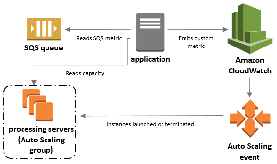
https://docs.aws.amazon.com/ja_jp/autoscaling/ec2/userguide/as-using-sqs-queue.html
CloudFormation による Auto Scaling 作成
- CreationPolicy で希望容量のインスタンスからシグナルがあるまで ASG の作成成功を待機。
- 起動設定の UserData で cfn-signal を実施。
Resources:
AutoScalingGroup:
Type: AWS::AutoScaling::AutoScalingGroup
Properties:
AvailabilityZones:
Fn::GetAZs:
Ref: "AWS::Region"
LaunchConfigurationName:
Ref: LaunchConfig
DesiredCapacity: '3'
MinSize: '1'
MaxSize: '4'
CreationPolicy:
ResourceSignal:
Count: '3'
Timeout: PT15M
LaunchConfig:
Type: AWS::AutoScaling::LaunchConfiguration
Properties:
ImageId: !Ref LatestLinuxAmiId
InstanceType: t2.micro
UserData:
"Fn::Base64":
!Sub |
#!/bin/bash -xe
yum update -y aws-cfn-bootstrap
/opt/aws/bin/cfn-signal -e $? --stack ${AWS::StackName} --resource AutoScalingGroup --region ${AWS::Region}
UpdatePolicy
- CFn スタック更新時にデフォルトでは既存インスタンスは置き換わらない。
-
UpdatePolicy で次の値を指定した場合にスタック更新でインスタンスがリプレースされる。
- AutoScalingReplacingUpdate ... Auto Scaling グループ全体を置き換える
- AutoScalingRollingUpdate ... 既存 Auto Scaling グループ内で新しいインスタンスを立ててローリングアップデート
-
AutoScalingScheduledAction > IgnoreUnmodifiedGroupSizeProperties: true
- スケジュールアクションで変更されたグループサイズ (Max,Min,Desired) がスタック更新で上書きされないようにするオプション。
- Auto Scaling グループにスケジュールアクションが設定されている場合、CFn テンプレートでグループサイズを変更していない限りはテンプレート更新でグループサイズを上書きしないようにする。
Resources:
AutoScalingGroup:
Type: AWS::AutoScaling::AutoScalingGroup
... Snip ...
UpdatePolicy:
AutoScalingRollingUpdate:
MinInstancesInService: '1'
MaxBatchSize: '2'
# how much time to wait for the signal
PauseTime: PT1M
WaitOnResourceSignals: 'true'
# we can suspend processes during the update
# SuspendProcesses:
# - list of processes...
AutoScalingScheduledAction:
# Prevent Scheduled Actions from modifying min/max/desired for CloudFormation
IgnoreUnmodifiedGroupSizeProperties: 'true'
UpdatePolicy:
AutoScalingReplacingUpdate:
WillReplace: 'true'
Ref
- https://docs.aws.amazon.com/AWSCloudFormation/latest/UserGuide/aws-attribute-updatepolicy.html
- https://aws.amazon.com/jp/premiumsupport/knowledge-center/auto-scaling-group-rolling-updates/
CodeDeploy と Auto Scaling のインテグレーション
Ref. AWS: CI/CD
CodeDeploy のデプロイグループに Auto Scaling グループを指定できる。
- Auto Scaling グループ内の既存インスタンスとスケールアウトで新しく立ち上がるインスタンスに新しいリビジョンがデプロイされる。
- デプロイタイプとしてインプレースとBlue/Green の両方が指定可能。
- Blue/Green では AutoScalingReplacingUpdate 同様、Auto Scaling グループ全体を置き換える方法も選択できる。
- トリッキーな点として、既存インスタンスへ新リビジョンをデプロイしている最中にスケールアウトが発生した場合、まだ新リビジョンデプロイが成功したとみなされていないため、以前のリビジョンが新しく立ち上がるインスタンスにデプロイされる。それを防ぐため、新しいデプロイを実施する間は Suspended Process オプションで「Launch」を停止するソリューションがある。
https://docs.aws.amazon.com/codedeploy/latest/userguide/integrations-aws-auto-scaling.html
- 以下の Auto Scaling イベントを terminate する: common_functions.sh というのでやってくれるそう
- AZRebalance
- AlarmNotification
- ScheduledActions
- ReplaceUnhealthy
AWS Auto Scaling
- https://docs.aws.amazon.com/ja_jp/autoscaling/plans/userguide/what-is-aws-auto-scaling.html
- EC2 以外のサービスも Auto Scaling できる。
- EC2, EC2 スポットフリートリクエスト, ECS ホスト, EMR クラスターノード, Aurora レプリカ
- DynamoDB キャパシティ, Kinesis Data Streams シャード
-
Amazon EC2 Auto Scaling グループ:
- Auto Scaling グループの EC2 インスタンスを起動または削除。
-
Amazon EC2 スポットフリートリクエスト:
- スポットフリートリクエストからインスタンスを起動または削除します。または、料金や容量の問題で中断されたインスタンスを自動的に置き換えます。
-
Amazon ECS
- 負荷の変化に応じて ECS ホストの必要数の増減を調整します。
- コンテナをホストするインスタンスを増減。コンテナの管理は ECS が実施。
-
Amazon DynamoDB
- DynamoDB テーブルまたはグローバルセカンダリインデックスを有効にして、プロビジョニングされた読み取りおよび書き込みキャパシティを増減させ、スロットリングなしでトラフィックの増加を処理します。
-
Amazon Aurora
- Aurora リードレプリカの数を動的に調整して、アクティブな接続やワークロードの変化を処理。
- RDS のリードレプリカには対応していない。
-
現在利用できるスケーリング機能は動的スケーリングと予測スケーリングです。
-
動的スケーリング
- ターゲット追跡スケーリングポリシーにより、リソース使用率を指定されたターゲット値に維持するために、スケーリングプランが各リソースのキャパシティを増減。
-
予測スケーリング (Predictive scaling):
- 負荷予測: 指定された負荷メトリクスの最大 14 日間の履歴を分析して、次の 2 日の今後の需要を予測します。このデータは 1 時間間隔で利用でき、毎日更新されます。
- スケジュールされたスケーリングアクション: 負荷予測を反映してプロアクティブにリソースキャパシティを追加および削除するスケーリングアクションをスケジュールします。スケジュールされた時刻になると、AWS Auto Scaling はリソースの最小容量を、スケジュールされたスケーリングアクションで指定された値に基づいて更新します。これは、リソースの使用率をスケーリング戦略で指定されたターゲット値に維持するためです。アプリケーションが予測よりも多くの容量を必要とする場合は、動的スケーリングを使用して追加のキャパシティを追加できます。
- 最大キャパシティの動作: リソースごとに、最小キャパシティと最大キャパシティの制限があり、スケジュールされたスケーリングアクションによって指定される値はその範囲内が存在することが望まれます。ただし、予測キャパシティが最大キャパシティよりも大きい場合に、アプリケーションが最大キャパシティを超えてリソースを追加できるかどうかを制御できます。
- 現在、予測スケーリングは Amazon EC2 Auto Scaling グループでのみ使用できます。
Multi AZ/Multi Region
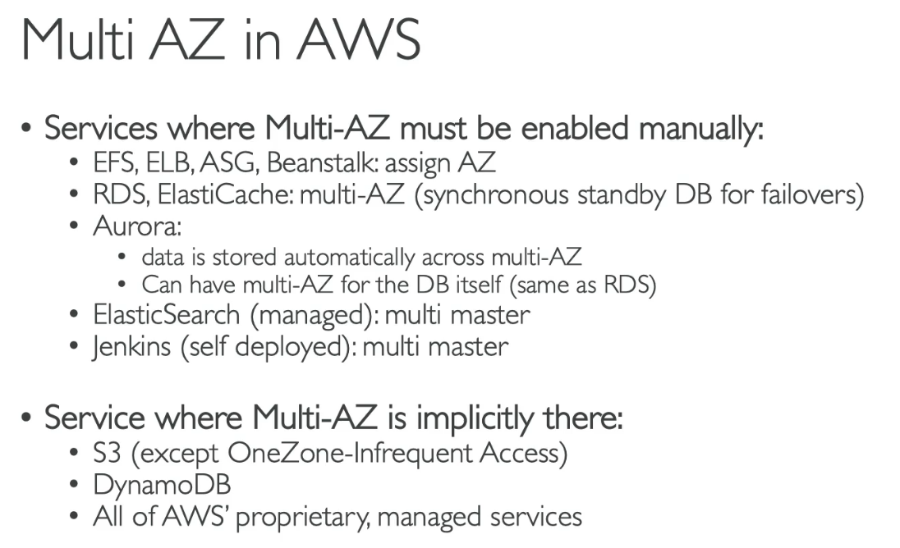
EBS は AZ リソース。Multi AZ に対応するにはスナップショットを使ったハックが必要になる。
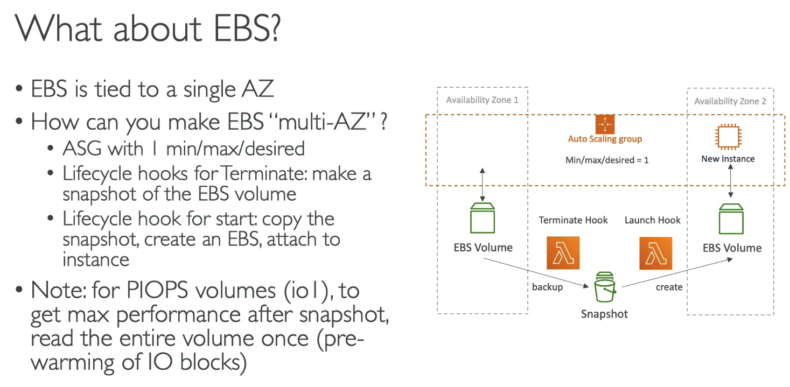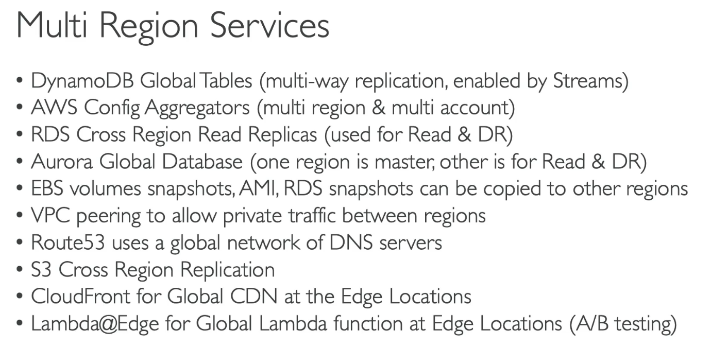
CloudFormation StackSets
- クロスアカウント/クロスリージョンに同一スタックを1 度のオペレーションで作成、更新、削除できる。
CodePipeline クロスリージョン・クロスアカウント
- クロスリージョンや本番アカウントへのサービスデプロイ。
- アーティファクトストア (S3) へのコピーやアクセスのためのポリシー設定必要になる。
Disaster Recovery
RPO: Recovery Point Objective - バックアップを取る周期
RTO: Recovery Time Objective - リカバリにかかる時間
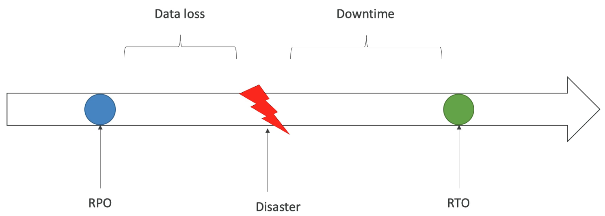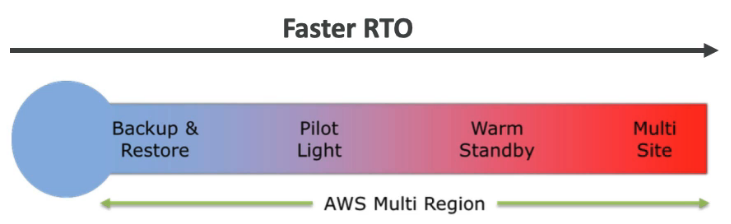
Pilot Light ... クリティカルなシステムだけ Warm Standby にする。
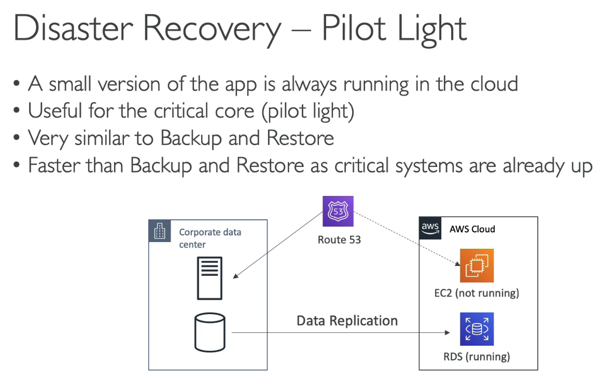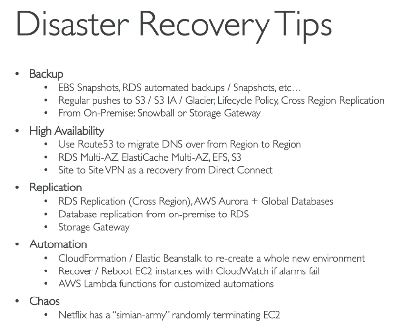
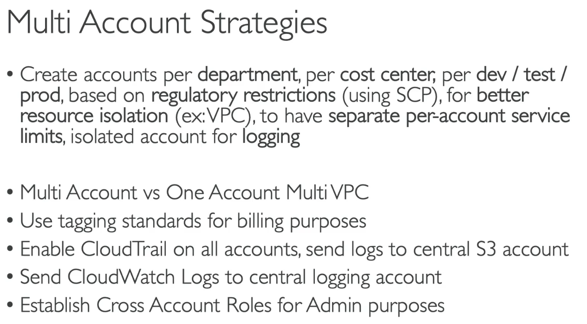
AWS: Security: IAM, STS, Organization
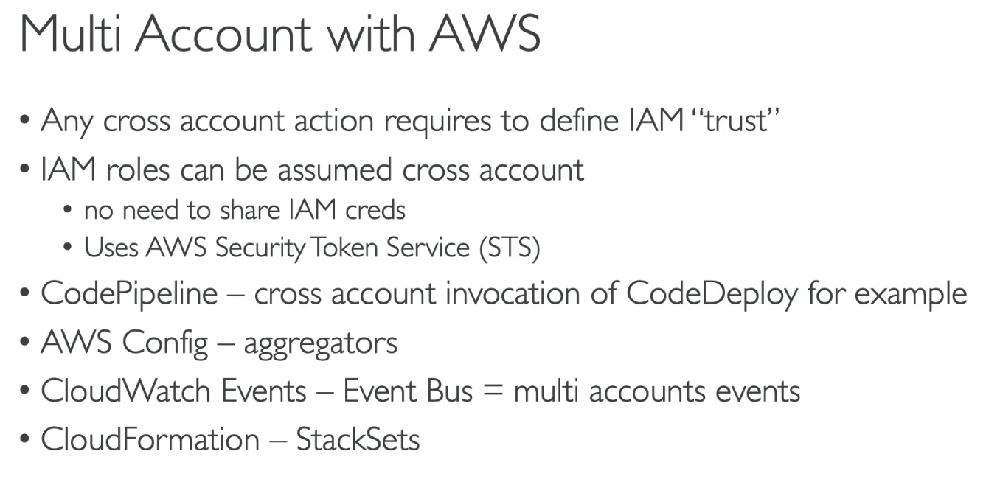
Control Tower
AWS: Security: CloudFormation, Service Catalog, Control Tower
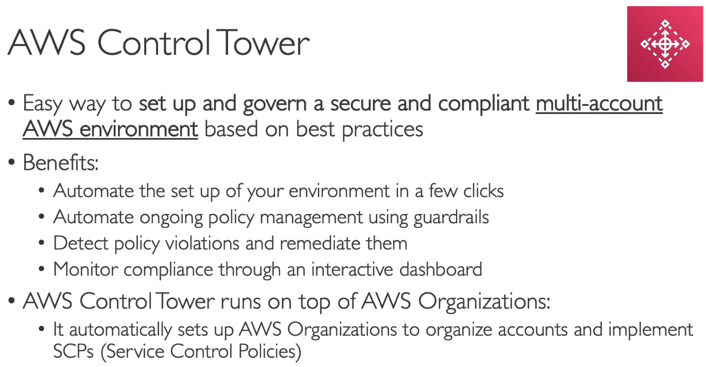